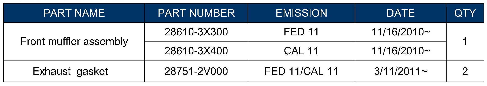
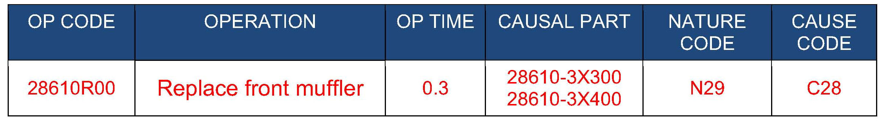
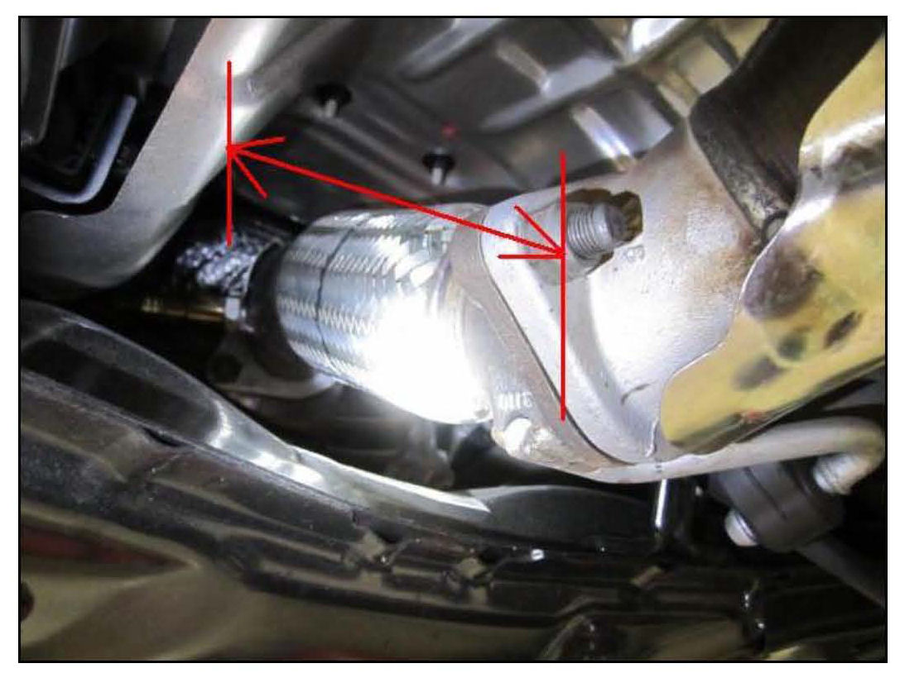
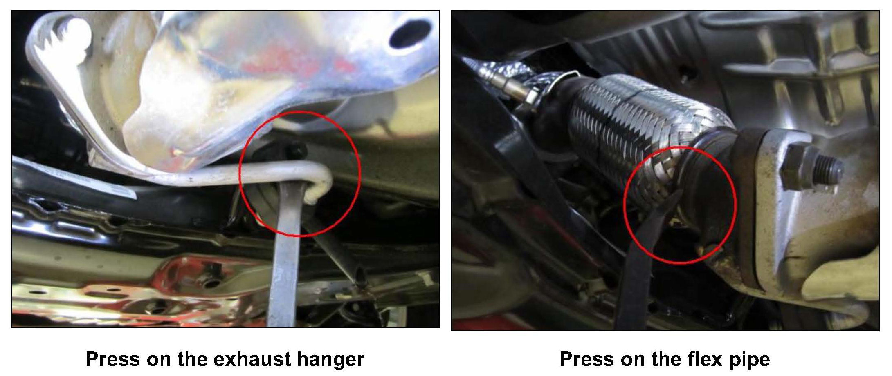

Exhaust System - Rattle Noise In Reverse On Cold Start
GROUPAUTOMATIC TRANSMISSION
NUMBER
12-AT-003-1
DATE
JUNE 2012
MODEL
ELANTRA (MD)
SUBJECT:
RATTLE NOISE IN REVERSE WHEN COLD
This TSB supersedes TSB 12-AT-003 to revise Parts Information.
Description:
Some Elantra vehicles may experience a rattle or clicking noise from the front muffler with the brake applied in Reverse after a cold start. The noise does not occur after engine warm-up.
Do not replace the transmission for this condition. Instead, follow the repair procedure and replace the front muffler.
Applicable Vehicles: Model Year 2011~ Elantra equipped with automatic transmission
Applicable VIN: Elantra (MD) vehicles with VINs beginning with KMHDH~
Applicable Production Date Range: 11/12/2010 through 12/30/2011

PARTS INFORMATION:

WARRANTY INFORMATION:
SERVICE PROCEDURE:
NOTE
The rattle or clicking noise occurs only during warm-up after a cold start.
1. Lift the vehicle on a hoist with the:
^ Engine running
^ Parking brake applied
^ Shift lever into Reverse
Check if the noise comes from the exhaust muffler as shown in Step 2.

2. Use a screwdriver to press against either of the two locations shown below.
If the noise is reduced or stops, replace the front muffler.

3. Drive the vehicle to confirm the noise is eliminated.